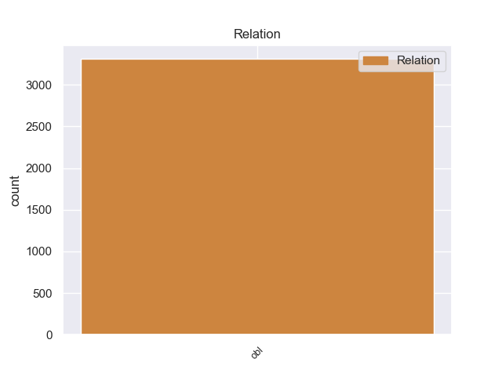
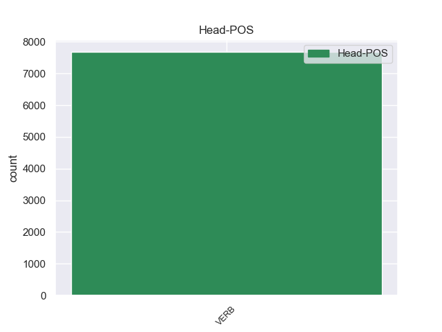
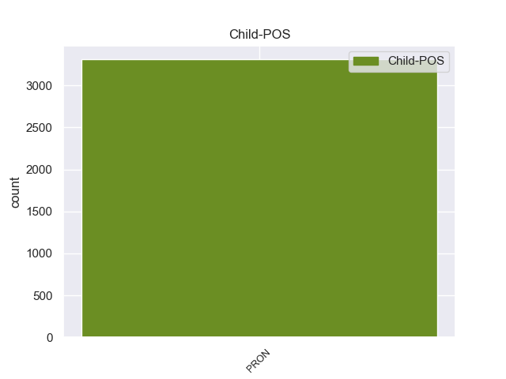

Distribution of features within this leaf



Morphosyntax Rules sorted by frequency.
- When the dependent token is the nominal subject(nsubj) of the head token, and the head token is VERB and the dependent token is PRON, the Gender needs to be Masc.
1 Нельзя _ _ _ _ 0 _ _ _
2 дорогам _ _ _ _ 0 _ _ _
3 зарастать _ _ _ _ 0 _ _ _
4 , _ _ _ _ 0 _ _ _
5 - _ _ _ _ 0 _ _ _
6 сказал сказать VERB _ Aspect=Perf|Gender=Masc|Mood=Ind|Number=Sing|Tense=Past|VerbForm=Fin|Voice=Act 0 _ _ _
7 он он PRON _ Case=Nom|Gender=Masc|Number=Sing|Person=3 6 nsubj 6:nsubj _
8 твердо _ _ _ _ 0 _ _ _
9 . _ _ _ _ 0 _ _ _
1 Я _ _ _ _ 0 _ _ _
2 изрезал _ _ _ _ 0 _ _ _
3 ладони _ _ _ _ 0 _ _ _
4 , _ _ _ _ 0 _ _ _
5 пока _ _ _ _ 0 _ _ _
6 , _ _ _ _ 0 _ _ _
7 наконец _ _ _ _ 0 _ _ _
8 , _ _ _ _ 0 _ _ _
9 выдрал выдрать VERB _ Aspect=Perf|Gender=Masc|Mood=Ind|Number=Sing|Tense=Past|VerbForm=Fin|Voice=Act 0 _ _ _
10 его он PRON _ Case=Acc|Gender=Masc|Number=Sing|Person=3 9 obj 9:obj _
11 из _ _ _ _ 0 _ _ _
12 земли _ _ _ _ 0 _ _ _
13 . _ _ _ _ 0 _ _ _
1 Он _ _ _ _ 0 _ _ _
2 осторожно _ _ _ _ 0 _ _ _
3 , _ _ _ _ 0 _ _ _
4 за _ _ _ _ 0 _ _ _
5 дужку _ _ _ _ 0 _ _ _
6 , _ _ _ _ 0 _ _ _
7 снял _ _ _ _ 0 _ _ _
8 очки _ _ _ _ 0 _ _ _
9 , _ _ _ _ 0 _ _ _
10 ему он PRON _ Case=Dat|Gender=Masc|Number=Sing|Person=3 11 iobj 11:iobj _
11 хотелось хотеться VERB _ Aspect=Imp|Gender=Neut|Mood=Ind|Number=Sing|Tense=Past|VerbForm=Fin|Voice=Mid 0 _ _ _
12 получше _ _ _ _ 0 _ _ _
13 рассмотреть _ _ _ _ 0 _ _ _
14 человека _ _ _ _ 0 _ _ _
15 , _ _ _ _ 0 _ _ _
16 задающего _ _ _ _ 0 _ _ _
17 такие _ _ _ _ 0 _ _ _
18 несуразные _ _ _ _ 0 _ _ _
19 вопросы _ _ _ _ 0 _ _ _
20 , _ _ _ _ 0 _ _ _
21 а _ _ _ _ 0 _ _ _
22 припылившиеся _ _ _ _ 0 _ _ _
23 стекла _ _ _ _ 0 _ _ _
24 только _ _ _ _ 0 _ _ _
25 мешали _ _ _ _ 0 _ _ _
26 . _ _ _ _ 0 _ _ _
1 Никогда _ _ _ _ 0 _ _ _
2 не _ _ _ _ 0 _ _ _
3 был _ _ _ _ 0 _ _ _
4 он он PRON _ Case=Nom|Gender=Masc|Number=Sing|Person=3 6 nsubj:pass 6:nsubj:pass _
5 так _ _ _ _ 0 _ _ _
6 загружен загрузить VERB _ Aspect=Perf|Gender=Masc|Number=Sing|Tense=Past|Variant=Short|VerbForm=Part|Voice=Pass 0 _ _ _
7 и _ _ _ _ 0 _ _ _
8 обременен _ _ _ _ 0 _ _ _
9 делами _ _ _ _ 0 _ _ _
10 , _ _ _ _ 0 _ _ _
11 как _ _ _ _ 0 _ _ _
12 в _ _ _ _ 0 _ _ _
13 годы _ _ _ _ 0 _ _ _
14 детства _ _ _ _ 0 _ _ _
15 . _ _ _ _ 0 _ _ _
1 Ну _ _ _ _ 0 _ _ _
2 видели видеть VERB _ Aspect=Imp|Mood=Ind|Number=Plur|Tense=Past|VerbForm=Fin|Voice=Act 0 _ _ _
3 - _ _ _ _ 0 _ _ _
4 что _ _ _ _ 0 _ _ _
5 с _ _ _ _ 0 _ _ _
6 того то PRON _ Animacy=Inan|Case=Gen|Gender=Masc|Number=Sing 2 conj 2:conj SpaceAfter=No
7 ? _ _ _ _ 0 _ _ _
1 И _ _ _ _ 0 _ _ _
2 в _ _ _ _ 0 _ _ _
3 то _ _ _ _ 0 _ _ _
4 же _ _ _ _ 0 _ _ _
5 время _ _ _ _ 0 _ _ _
6 не _ _ _ _ 0 _ _ _
7 быть быть VERB _ Aspect=Imp|VerbForm=Inf|Voice=Act 0 _ _ _
8 " _ _ _ _ 0 _ _ _
9 как _ _ _ _ 0 _ _ _
10 все все PRON _ Animacy=Anim|Gender=Masc|Number=Plur 7 advcl 7:advcl SpaceAfter=No
11 " _ _ _ _ 0 _ _ _
12 , _ _ _ _ 0 _ _ _
13 " _ _ _ _ 0 _ _ _
14 средним _ _ _ _ 0 _ _ _
15 " _ _ _ _ 0 _ _ _
16 , _ _ _ _ 0 _ _ _
17 " _ _ _ _ 0 _ _ _
18 типичным _ _ _ _ 0 _ _ _
19 " _ _ _ _ 0 _ _ _
20 . _ _ _ _ 0 _ _ _
1 В _ _ _ _ 0 _ _ _
2 другом _ _ _ _ 0 _ _ _
3 углу _ _ _ _ 0 _ _ _
4 жил _ _ _ _ 0 _ _ _
5 милиционер _ _ _ _ 0 _ _ _
6 Федорцов _ _ _ _ 0 _ _ _
7 , _ _ _ _ 0 _ _ _
8 все _ _ _ _ 0 _ _ _
9 время _ _ _ _ 0 _ _ _
10 кашляющий _ _ _ _ 0 _ _ _
11 , _ _ _ _ 0 _ _ _
12 он _ _ _ _ 0 _ _ _
13 говорил говорить VERB _ Aspect=Imp|Gender=Masc|Mood=Ind|Number=Sing|Tense=Past|VerbForm=Fin|Voice=Act 0 _ _ _
14 , _ _ _ _ 0 _ _ _
15 что _ _ _ _ 0 _ _ _
16 у _ _ _ _ 0 _ _ _
17 него он PRON _ Case=Gen|Gender=Masc|Number=Sing|Person=3 13 ccomp 13:ccomp _
18 осколок _ _ _ _ 0 _ _ _
19 в _ _ _ _ 0 _ _ _
20 легком _ _ _ _ 0 _ _ _
21 . _ _ _ _ 0 _ _ _
1 Выбрал _ _ _ _ 0 _ _ _
2 бы _ _ _ _ 0 _ _ _
3 Ельцин _ _ _ _ 0 _ _ _
4 Николая _ _ _ _ 0 _ _ _
5 Федорова _ _ _ _ 0 _ _ _
6 , _ _ _ _ 0 _ _ _
7 мы _ _ _ _ 0 _ _ _
8 пытались _ _ _ _ 0 _ _ _
9 бы _ _ _ _ 0 _ _ _
10 понять понять VERB _ Aspect=Perf|VerbForm=Inf|Voice=Act 0 _ _ _
11 , _ _ _ _ 0 _ _ _
12 почему _ _ _ _ 0 _ _ _
12.1 _ _ _ _ _ 0 _ _ _
13 именно _ _ _ _ 0 _ _ _
When the dependent token is the clausal subject(csubj) of the head token, and the head token is VERB and the dependent token is PRON, the Gender needs to be Masc.
1 И _ _ _ _ 0 _ _ _
2 потому _ _ _ _ 0 _ _ _
3 , _ _ _ _ 0 _ _ _
4 кто _ _ _ _ 0 _ _ _
5 бы _ _ _ _ 0 _ _ _
6 им он PRON _ Case=Ins|Gender=Masc|Number=Sing|Person=3 11 csubj 11:csubj _
7 ни _ _ _ _ 0 _ _ _
8 был _ _ _ _ 0 _ _ _
9 , _ _ _ _ 0 _ _ _
10 будет _ _ _ _ 0 _ _ _
11 стремиться стремиться VERB _ Aspect=Imp|VerbForm=Inf|Voice=Mid 0 _ _ _
12 к _ _ _ _ 0 _ _ _
13 подавлению _ _ _ _ 0 _ _ _
14 идеологических _ _ _ _ 0 _ _ _
15 и _ _ _ _ 0 _ _ _
16 политических _ _ _ _ 0 _ _ _
17 оппонентов _ _ _ _ 0 _ _ _
18 . _ _ _ _ 0 _ _ _
non-conforming Examples:
1 Она она PRON _ Case=Nom|Gender=Fem|Number=Sing|Person=3 5 nsubj 5:nsubj SpaceAfter=No
2 , _ _ _ _ 0 _ _ _
3 видимо _ _ _ _ 0 _ _ _
4 , _ _ _ _ 0 _ _ _
5 волновалась волноваться VERB _ Aspect=Imp|Gender=Fem|Mood=Ind|Number=Sing|Tense=Past|VerbForm=Fin|Voice=Mid 0 _ _ _
6 , _ _ _ _ 0 _ _ _
7 потому _ _ _ _ 0 _ _ _
8 что _ _ _ _ 0 _ _ _
9 забыла _ _ _ _ 0 _ _ _
10 закрыть _ _ _ _ 0 _ _ _
11 за _ _ _ _ 0 _ _ _
12 собой _ _ _ _ 0 _ _ _
13 обе _ _ _ _ 0 _ _ _
14 обитые _ _ _ _ 0 _ _ _
15 черной _ _ _ _ 0 _ _ _
16 клеенкой _ _ _ _ 0 _ _ _
17 двери _ _ _ _ 0 _ _ _
18 . _ _ _ _ 0 _ _ _
1 Она она PRON _ Case=Nom|Gender=Fem|Number=Sing|Person=3 2 nsubj 2:nsubj _
2 взглянула взглянуть VERB _ Aspect=Perf|Gender=Fem|Mood=Ind|Number=Sing|Tense=Past|VerbForm=Fin|Voice=Act 0 _ _ _
3 на _ _ _ _ 0 _ _ _
4 него _ _ _ _ 0 _ _ _
5 , _ _ _ _ 0 _ _ _
6 как _ _ _ _ 0 _ _ _
7 будто _ _ _ _ 0 _ _ _
8 не _ _ _ _ 0 _ _ _
9 понимая _ _ _ _ 0 _ _ _
10 , _ _ _ _ 0 _ _ _
11 что _ _ _ _ 0 _ _ _
12 надо _ _ _ _ 0 _ _ _
13 просто _ _ _ _ 0 _ _ _
14 сесть _ _ _ _ 0 _ _ _
15 и _ _ _ _ 0 _ _ _
16 подождать _ _ _ _ 0 _ _ _
17 . _ _ _ _ 0 _ _ _
1 Затем _ _ _ _ 0 _ _ _
2 было _ _ _ _ 0 _ _ _
3 написано _ _ _ _ 0 _ _ _
4 , _ _ _ _ 0 _ _ _
5 что _ _ _ _ 0 _ _ _
6 в _ _ _ _ 0 _ _ _
7 1952 _ _ _ _ 0 _ _ _
8 году _ _ _ _ 0 _ _ _
9 она она PRON _ Case=Nom|Gender=Fem|Number=Sing|Person=3 10 nsubj 10:nsubj _
10 вышла выйти VERB _ Aspect=Perf|Gender=Fem|Mood=Ind|Number=Sing|Tense=Past|VerbForm=Fin|Voice=Act 0 _ _ _
11 замуж _ _ _ _ 0 _ _ _
12 , _ _ _ _ 0 _ _ _
13 а _ _ _ _ 0 _ _ _
14 в _ _ _ _ 0 _ _ _
15 1953 _ _ _ _ 0 _ _ _
16 году _ _ _ _ 0 _ _ _
17 развелась _ _ _ _ 0 _ _ _
18 . _ _ _ _ 0 _ _ _
1 Из-за _ _ _ _ 0 _ _ _
2 этого _ _ _ _ 0 _ _ _
3 в _ _ _ _ 0 _ _ _
4 прошлую _ _ _ _ 0 _ _ _
5 среду _ _ _ _ 0 _ _ _
6 Семен _ _ _ _ 0 _ _ _
7 Еремеевич _ _ _ _ 0 _ _ _
8 и _ _ _ _ 0 _ _ _
9 попросил просить VERB _ Aspect=Perf|Gender=Masc|Mood=Ind|Number=Sing|Tense=Past|VerbForm=Fin|Voice=Act 0 _ _ _
10 ее она PRON _ Case=Acc|Gender=Fem|Number=Sing|Person=3 9 obj 9:obj _
11 зайти _ _ _ _ 0 _ _ _
12 через _ _ _ _ 0 _ _ _
13 неделю _ _ _ _ 0 _ _ _
14 . _ _ _ _ 0 _ _ _
1 Если _ _ _ _ 0 _ _ _
2 Савельев _ _ _ _ 0 _ _ _
3 не _ _ _ _ 0 _ _ _
4 похвалит _ _ _ _ 0 _ _ _
5 Ефимову _ _ _ _ 0 _ _ _
6 , _ _ _ _ 0 _ _ _
7 можно _ _ _ _ 0 _ _ _
8 с _ _ _ _ 0 _ _ _
9 чистой _ _ _ _ 0 _ _ _
10 совестью _ _ _ _ 0 _ _ _
11 отказать отказать VERB _ Aspect=Perf|VerbForm=Inf|Voice=Act 0 _ _ _
12 ей она PRON _ Case=Dat|Gender=Fem|Number=Sing|Person=3 11 iobj 11:iobj _
13 и _ _ _ _ 0 _ _ _
14 покончить _ _ _ _ 0 _ _ _
15 с _ _ _ _ 0 _ _ _
16 этим _ _ _ _ 0 _ _ _
17 щекотливым _ _ _ _ 0 _ _ _
18 вопросом _ _ _ _ 0 _ _ _
19 . _ _ _ _ 0 _ _ _